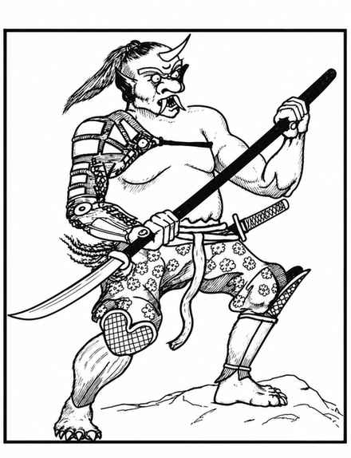

食人魔法师 · Ogre Mage
 |
|
食人魔法师在其原乡远比其他地方常见，通常在无人居住的地区筑巢，住在设防宅邸或地下洞窟群中，从那里出发捕捉财宝、人类、奴隶与食物。若在巢穴中遇到它们，必定另有一名强大的首领（每骰命中 +2，按 9 骰生物攻击并进行豁免），并有 2–12 名奴隶／俘虏。
食人魔法师能飞行 12 轮、隐形、制造半径 1 寸的黑暗、变形成 4–12 尺高的人类或类似双足类人生物，并每轮再生 1 点生命值（断肢必须重新接上才能再生）。每天一次，它还能施展魅惑人类、睡眠、气态形体，或制造寒冷射线；寒冷射线如同寒冷魔杖，造成 8 骰伤害，目标成功豁免则减半。食人魔法师说自己的语言、普通食人魔语、通用语和阵营语；其皮肤可为浅蓝、浅绿或淡棕色，头发通常为相反且更深的颜色，指甲黑色，牙齿与獠牙雪白，角为象牙色。